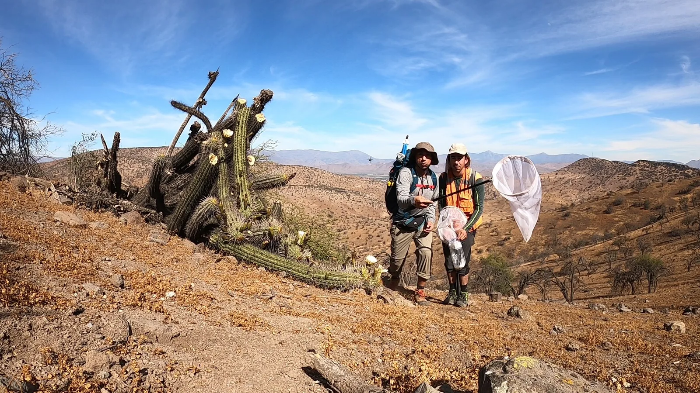
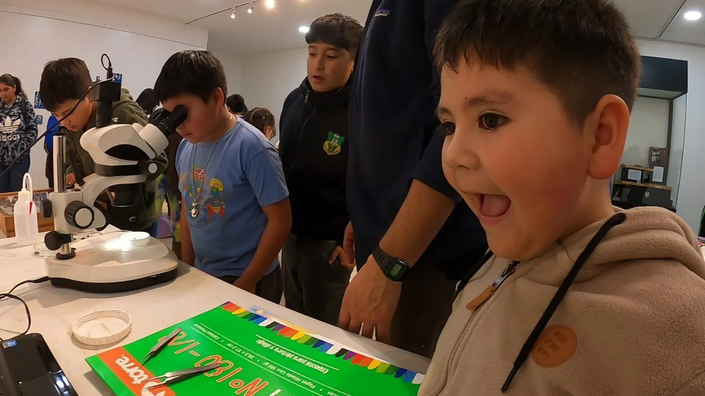
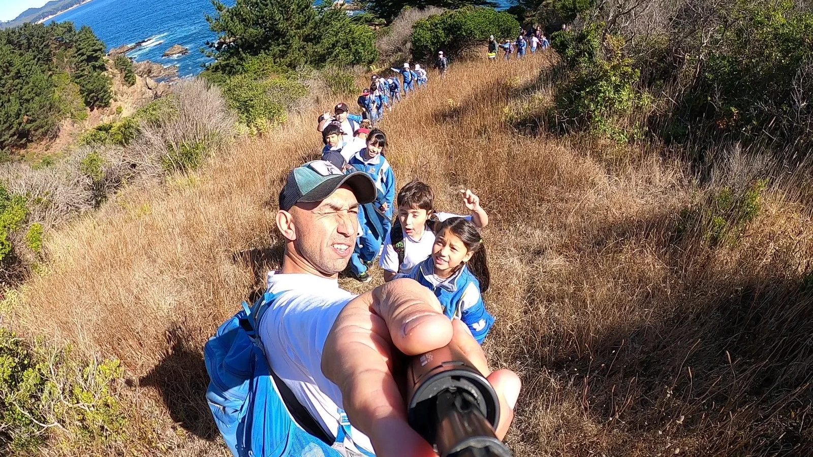

Consultoría · Entomología
Muestreo entomológico en ambientes áridos
Campañas de terreno para observar y registrar artrópodos asociados a ambientes áridos, combinando prospección activa y técnicas de captura dirigida.

Nuestro trabajo
Una selección de actividades de consultoría, observación y educación ambiental.
Experiencias
Conoce parte del trabajo que realizamos en terreno, espacios educativos y comunidades.
Consultoría · Entomología
Campañas de terreno para observar y registrar artrópodos asociados a ambientes áridos, combinando prospección activa y técnicas de captura dirigida.

Educación · Entomología
Actividad práctica de exploración de insectos mediante observación con estereomicroscopio, conversación guiada y experiencias creativas.

Educación · Territorio
Recorridos y actividades participativas para acercar la biodiversidad y el territorio a comunidades educativas.
Tu proyecto
Cuéntanos el territorio, objetivo y componente que necesitas abordar.